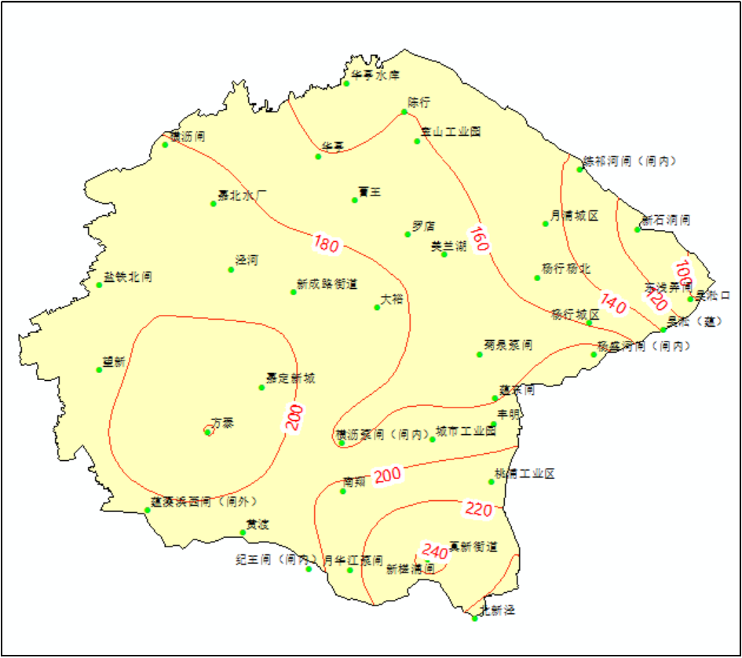

1、潮位特性分析
2019年受第9号台风“利奇马”影响，8月9～10日，上海沿江沿海出现了明显的风暴潮增水，增水幅度在0.5～1.3米。河口吴淞站最高高潮位3.90米，低于警戒潮位0.90米，最高高潮位出现时间于8月10日20:25:00，此时上海处于天文小潮汛，风暴潮影响期内最高低潮位2.43m，最高低潮位出现时间于8月10日2:55:00。
“利奇马”风暴潮影响期吴淞口站实测潮位
2、暴雨特性分析
受台风影响，上海9日傍晚起开始明显降雨，全市普降暴雨到大暴雨台风影响期间过程雨量大部分在150~250mm之间，主要集中在奉贤、闵行、嘉定、浦东等区。截止到11日10时，全市平均降雨167.0mm，其中过程雨量最大为奉贤区中港闸(内)272.0mm，其次为闵行区庄工业区271.0mm。
嘉宝北片内单站雨量最大为新槎浦闸站267.5mm，其次为杨盛河闸（闸内）站254mm，嘉宝北片“利奇马”台风期间总面雨量182.4mm。
“利奇马”台风嘉宝北片面雨量过程

“利奇马”台风嘉宝北片雨量等值线
3、河网调蓄能力分析
采用2019年雨量站、水（潮）位站实时监测资料，模拟计算2019年“利奇马”台风期（8日17时～11日10时）嘉宝北片槽蓄容量变化过程。
台风“利奇马”嘉宝北片蓄量变化与外潮顶托关系
台风“利奇马”嘉宝北片蓄量变化与雨型关系
台风“利奇马”对上海的风雨影响从8月8日起一直持续到11日，从8月8日起嘉宝北片出现明显降雨，嘉宝北片最大1h面雨量为30.3mm，出现时间为8月10日16:00:00，嘉宝北片从8月8日起开始预降，其中罗店站最低水位2.23m、最高水位3.49m，嘉定南门站最低水位2.44m、最高水位3.67m。由上图可见，台风“利奇马”期间嘉宝北片河网槽蓄容量整体上升速度迅速，8月11日嘉宝北片虽未有降雨，但河网槽蓄容量上升较快，分析其主要原因为小潮汛最高低潮较高，不利于分片排水。
“利奇马”台风期初槽蓄容量为123.37百万m3，警戒水位对应可调蓄容量为31.1百万m3，保证水位对应可调蓄容量为69.25百万m3；期间最低槽蓄容量119.06百万m3、最高槽蓄容量167.49百万m3，河网槽蓄容量变幅为48.43百万m3，保证水位对应可调蓄容量25.13百万m3。